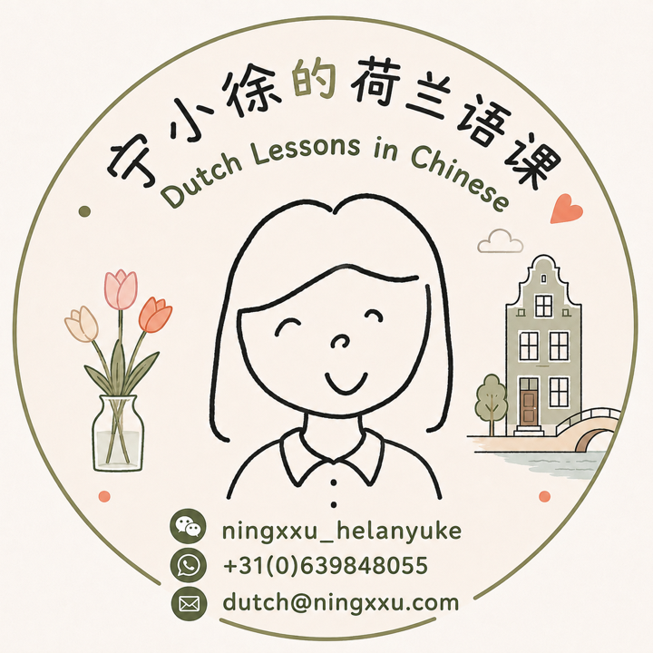

👋 Hoi! Ik ben Ning (uitgesproken zoals in "Good Eve-ning"). Ik ben immigrant en moeder. Ik denk in een mix van Engels en Nederlands, terwijl mijn moedertalen het Hangzhou-dialect en Mandarijn-Chinees zijn. Ik ben altijd wel ergens over aan het nadenken, en soms doe ik dat terwijl ik shuffle dance. Ik ben lang een hard persoon geweest, maar ik oefen om opener en zachter te zijn. Ergens daarnaast heb ik ook producten en teams gebouwd in verschillende sectoren en culturen.
NING XU
Nederlands lesgeven
Contact
wechat:
ningxxu_helanyuke
whatsapp:
+31(0)639848055
e-mail:
dutch@ningxxu.com

Nederlandse Les in het Chinees 🌱 Beginnerscursus: vanaf nul beginnen en ontspannen Nederlands durven spreken 🧩 Grammaticacursus: Nederlandse grammatica in het Chinees begrijpen en echt gaan gebruikenCreëren
Alle Talen Thuis
Kies een woord uit een van de familietalen en ontdek hoe het eruitziet, klinkt en voelt in de andere
App
Talk On
Een stemmaatje dat meertalige kinderen helpt talen te blijven gebruiken die ze beginnen te vergeten
Binnenkort
App
Hanzi Quest
Een spel om Chinese karakters te herkennen, onthouden en uiteindelijk echt eigen te maken
Binnenkort
Schrijven & Illustreren
Essay
Hoe Ik Nederlands Leerde
Mijn reis met het leren van Nederlands, met notities voor het leren van elke nieuwe taal
Essay
Hoe ik de wereld zie
Wat ik geloof, en hoe ik systemen probeer te begrijpen
Yet More Musings on Identity
identiteit, erbij horen, meertalig opvoeden, culturele vervreemding, hokjesdenken